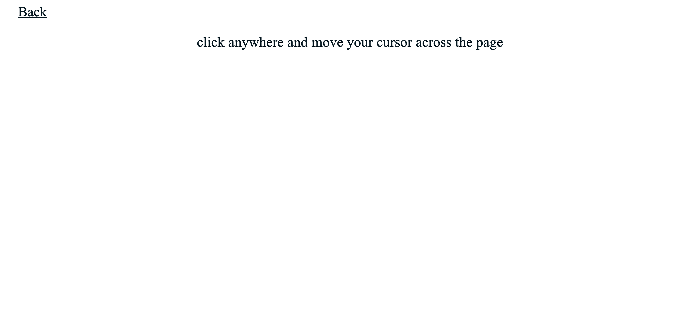
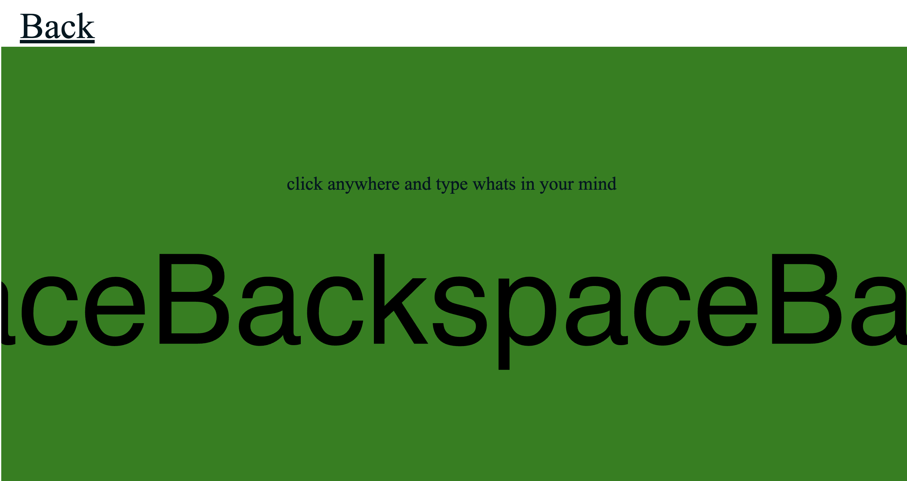
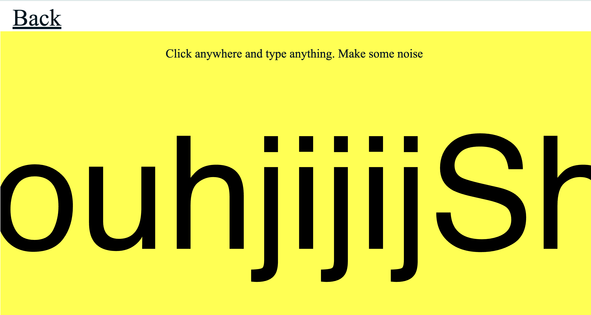

I did this panning exercise by following along Daniel Schiffman youtube tutorial on sound. I wanted to explore more in depth on how to use sound in p5 for my game nacigation.

in class activity. I really like the idea where the size of the sound is directly related to the volume of the audio. Very fun exercise. Sound is not my strongest as I have never experimented with sound before.I was pretty lost in class but I fixed the issue.

similar to the second one this one is the same but allows user to interact more as instead of the background song its the audio input from the microphone.